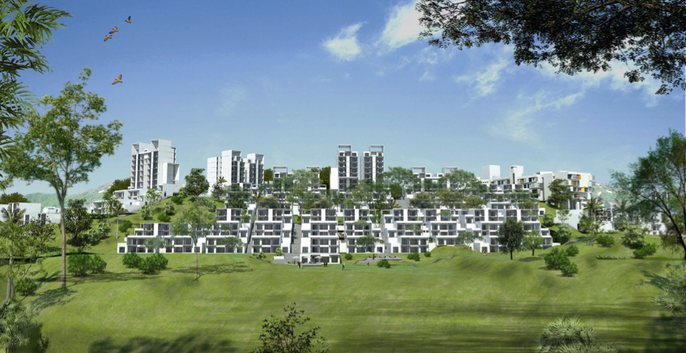

Great Living Engineered
Township Living
Economic, social and health needs of humans have always motivated them to live close to each other and in vicinity of functional infrastructure. Earlier it was water and agriculture, and in the modern era’s urban areas it’s more about jobs, roads, MRTS and other social infrastructure. The crux of it is that every human is chasing a good standard of living and means of employment. Industrial Townships by Indian conglomerates such as Reliance, Godrej, BHEL, SAIL and others are some of the first examples of quality habitation. But these primarily served interests of employees in such massive organizations. What does one do if one wants to live in close proximity of amenities such as schools, hospitals, malls, multiplexes similar to the employees of these companies? Basically what avenues are there for one choosing to walk to work and live a convenient life?
Historically, lack of spaces in big cities like Mumbai, Delhi, Pune, Bangalore, etc. has prevented townships from coming up. And it wasn’t considered viable by the developers too. However, since the Indian economy started to expand at a fast pace from the year 2000, migration into larger cities created a huge demand for quality housing.
Today, a few real estate developers across the country are delivering to demands of the consumers and overcoming the problem of lack of spaces to come up with townships where people like us can live. The city of Pune has seen development of residential and IT/ITES townships on both Eastern and Western fringes.

Image source: Rohan’s Bhugaon project
But, before we go any further, let us understand what a ‘township’ is. The very basic idea of a township is that it is a city within a city. And like any developed city, virtually everything that people need to live a comfortable life is available within the township. Some of the examples of the amenities and infrastructure that exist in a township are -
- Commercial Spaces and Offices,
- Schools,
- Hospitals,
- Malls, and other Retail establishments,
- Hotels, Restaurants, Cafes, etc.
- Other Entertainment Facilities like Multiplexes, Amphitheaters, etc.
- Club Houses, Swimming Pools, State-of-the-art Gymnasiums, etc.
- Stadiums, Golf Courses, various kinds of Playgrounds, other Sporting facilities, etc.
Apart from this, some of the other direct and indirect benefits that the residents of the townships, as well as the people living in the cities where the townships come up are -
- Access to a whole variety of amenities that are spread across the townships are interwoven with the residential towers in line with the concept of ‘walk to work’, and ‘walk to all the amenities’, that helps the residents save a huge amount of time on a daily basis.
- The residents have access to all the required amenities and facilities needed, thereby almost eliminating the need to ever step out of the boundaries of the townships. This also helps in reducing the pressure on the existing infrastructure of city that is available outside the townships.
- Walking to work and the amenities, and for carrying out daily chores, apart from being healthy, also helps in reducing the carbon footprint of the residents, because of lower use of vehicles.
- The elaborately planned townships with huge tracts of green and open spaces help in reducing the noise and other pollution levels within the townships, thereby reducing the stress levels of the residents, and also help them in living a healthier life.
- Townships help and encourage ‘Community Living’. It is often observed that tightly knit communities form among the residents due to close proximity of the residences and sharing of amenities. Various clubs that encourage sports and fitness activities like tennis, football, basketball, cricket, running, cycling, etc.; hobbies and crafts like origami, painting and sketching, etc. come up within the townships and offer a huge variety of options to the residents to bond with each other. Even celebration of festivals, religious ceremonies, etc. take a different color altogether due to the close bonds that are formed between the residents.
- The facilities available in the townships are open to the residents of the city outside the townships too, thereby expanding the infrastructure and amenities available to the city as a whole, and also helps reduce pressure on the existing facilities in the city.
Economic principle of “Economies of Scale” can be easily seen to work in case of townships as incremental infrastructure per resident is likely to be much lower for it is a concentrated development. The massive amount of infrastructure, and other benefits created by townships has started being recognized by the Governments across the country, which has led to them framing favourable policies that promote township development. The one challenge real estate industry faces is that township development is a multi-year process in some cases it can be a decade or more long as well. Thereby the industry seeks quicker approvals and faster infrastructure development from the Governments of the day. Only when both private and public parties both work in tandem will the results be good financially as well as socially.